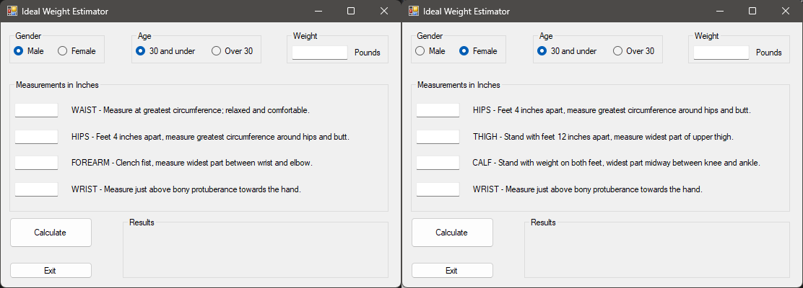

Overview:
This is a new and easy to use tool to calculate body fat and ideal body weight using the methods from “The Ultimate Fit or Fat” by Covert Bailey. By measuring just a few key body points the software will calculate body fat percentage and lean body mass with great accuracy. This is not only convenient but also reliable.
The program takes into account age and gender so calculations are for both men and women. This means the results are tailored to you, so a more accurate reflection of your body composition. You will need to enter measurements for specific body parts, waist, hips, thighs, calves, forearms and wrists. With these inputs the program will calculate body fat percentage. And calculate ideal body weight based on lean body mass so a full assessment of your health.
Based on the methods from Covert Bailey’s book this is a must have for anyone who wants to monitor and manage their body composition. Whether you’re a fitness enthusiast looking to optimize your physical condition or just someone who wants to improve your overall health this is the tool for you. It will give you the information and guidance to make informed decisions about your health and fitness journey, convenience and scientifically proven methods for body composition tracking and management.
Here are two screenshots of the Ideal Weight Estimator. As you can see, there are two sets of radio buttons, five text boxes, lots of labels, calculate and exit buttons and a results section.
The two sets of radio buttons are used to select the user’s gender and age. These selections determine which set of equations to use to calculate body composition and ideal weight. They also change the labels for some of the text boxes depending on the gender. The same approach is used for the age radio buttons, but the logic is in the calculate button. Depending on whether the user selects "30 and Under" or "Over 30" different equations are used to calculate the ideal weight. Once the user enters their measurements and clicks calculate the program will show them their results. These results will be the number of pounds of lean body mass and fat, the fat percentage and the ideal weight.